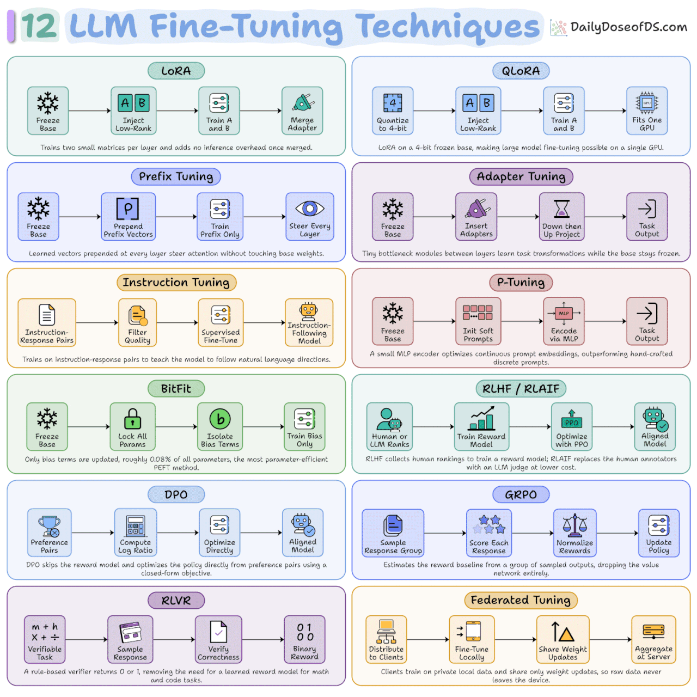

이 문서의 이해도
원문을 저장한 것만으로는 이해한 것으로 보지 않는다. 아래 항목은 사용자가 자기 말로 설명하거나 작은 비교·실험으로 검증했을 때만 완료한다.
검증 완료 1 / 12 · 8% (반올림)
- ✓ LoRA:
W와ΔW, 파라미터 계산, Rank 직관과rank(BA) ≤ 8을 자기 말로 설명했다. - ○ QLoRA
- ○ Prefix Tuning
- ○ Adapter Tuning
- ○ Instruction Tuning
- ○ P-Tuning
- ○ BitFit
- ○ RLHF / RLAIF
- ○ DPO
- ○ GRPO
- ○ RLVR
- ○ Federated Fine-Tuning
출처와 검증 상태
사용자 제공 원문 번역 — 아래 내용은 대화에서 제공된 영문 아티클을 한국어로 충실히 옮긴 것이다. 기술 주장, 수치, 제품 설명과 사례를 별도로 사실 확인하지 않았으며 위키의 검증된 결론으로 취급하지 않는다.
| 원문 제목 | 별도 제목이 제공되지 않음 |
|---|---|
| 작성자 | 제공되지 않음 |
| 게시일 | 제공되지 않음 |
| 원 게시물 URL | 제공되지 않음 |
| 함께 제공된 링크 | GitHub 저장소 단축 링크 |
함께 제공된 요약 이미지

사용자가 아티클과 함께 제공한 이미지. 이미지 안에 제작 출처로 DailyDoseofDS.com이 표시되어 있다.
한국어 번역 원문
나는 2년 넘게 LLM을 파인튜닝해 왔다! 내가 LLM을 파인튜닝한다면 배울 상위 12가지 기법은 다음과 같다. 이 글을 북마크해 두자.
1. LoRA
기본 가중치(Base Weights)는 동결하고, 업데이트로 사용할 두 개의 저랭크 행렬(Low-Rank Matrices)만 학습한다. 그 결과 파인튜닝할 파라미터 수가 약 95~99% 줄어든다.
2. QLoRA
4-bit로 양자화한 기본 모델 위에 LoRA를 적용한다.
3. Prefix Tuning
모든 레이어의 Key와 Value 앞에 학습 가능한 벡터를 덧붙이며, 기존 가중치는 동결한다.
4. Adapter Tuning
Transformer 레이어 사이에 작은 학습 가능 모듈을 삽입한다.
5. Instruction Tuning
(instruction, response) 쌍으로 지도학습 파인튜닝을 수행해, 모델이 단순히 다음 텍스트를 이어 쓰는 대신 지시를 따르도록 만든다.
6. P-Tuning
작은 Encoder를 통해 연속적인 Prompt Embedding을 최적화한다. 주로 불연속적인 Prompt가 불안정한 NLU 작업에 사용한다.
7. BitFit
Bias 항만 학습한다. 전체 파라미터의 약 0.08%만 학습하면서도 작은 규모부터 중간 규모 데이터셋에서는 Full Fine-Tuning과 견줄 수 있다.
8. RLHF / RLAIF
RLHF는 사람이 매긴 선호 순위로 Reward Model을 학습한 뒤, 그 보상 모델을 대상으로 PPO를 수행한다. 최초 ChatGPT를 만든 파이프라인이다.
RLAIF는 사람 Labeler를 판단용 LLM으로 바꾼다. 비용의 일부만으로 RLHF 수준의 품질을 얻는다.
9. DPO (Direct Preference Optimization)
Reward Model을 건너뛰고 선호 쌍(Preference Pairs)을 분류 스타일 Loss로 직접 최적화한다. PPO보다 단순하다.
10. GRPO (Group Relative Policy Optimization)
Prompt마다 Response 그룹을 샘플링하고 그룹 안에서 Reward를 정규화한다. DeepSeek R1이 이 방식을 사용했다.
11. RLVR (Reinforcement Learning with Verifiable Rewards)
학습된 Reward Model을 검증 가능한 점수를 반환하는 Checker 또는 Compiler로 바꾼다. R1의 수학·코드 학습에서 비용 없이 얻는 신호다.
12. Federated Fine-Tuning
분산된 Client에서 파인튜닝하며, Client는 원시 데이터가 아니라 Weight Update만 공유한다. 데이터를 기기 밖으로 내보낼 수 없을 때 사용한다.
GRPO, RLVR와 RULER
GRPO에는 Response마다 정확히 하나의 Scalar Reward가 필요하다. RLVR(13)은 수학과 코드에서 답을 Checker나 Compiler에 통과시켜 그 값을 비용 없이 만들어 낸다.
하지만 RAG 답변, Support Reply 또는 Summary 같은 작업에는 비교할 Gold Label이 없다.
일반적인 대안은 Faithfulness, Hallucination, Completeness를 점수화하는 수작업 Reward Function이다.
이 방식은 Calibration에 며칠이 걸리고, Weight가 잘못 설정되면 잘못된 행동에 Reward를 주며, Tool을 추가하거나 System Prompt를 수정할 때마다 망가진다.
OpenPipe의 Open-Source 프로젝트 ART에 구현된 RULER가 이 문제를 해결한다.
학습 중에 RULER는 샘플링된 N개의 Trajectory를 Judge LLM에 전달한다. Judge LLM은 Agent의 System Prompt를 기준으로 Trajectory들을 서로 상대적으로 순위화하고 점수를 반환한다.
상대 순위는 절대 점수보다 안정적이고, 어차피 GRPO가 그룹 안에서 정규화하므로 이 순위는 RLVR에서처럼 파이프라인에 곧바로 들어간다.
GitHub 저장소: https://lnkd.in/g-YF_-R6 — 별표(Star)를 누르는 것을 잊지 말자 ⭐
이제 당신 차례다. 당신의 LLM Fine-Tuning Tech Stack은 무엇인가?
추후 사용자 정리와 참조
LoRA는 사용자가 자기 말과 숫자 예제로 정리했다. 나머지 기법도 이후 설명을 받으면 해당 원문 Anchor와 연결하고, 원문의 주장과 사용자의 이해·추가 검증을 구분해 기록한다.
LoRAW와 ΔW · Rank · 4096 → 8 → 4096 정리 완료 QLoRA사용자 정리 대기 Prefix Tuning사용자 정리 대기 Adapter Tuning사용자 정리 대기 Instruction Tuning사용자 정리 대기 P-Tuning사용자 정리 대기 BitFit사용자 정리 대기 RLHF / RLAIF사용자 정리 대기 DPO사용자 정리 대기 GRPO사용자 정리 대기 RLVR사용자 정리 대기 Federated Fine-Tuning사용자 정리 대기